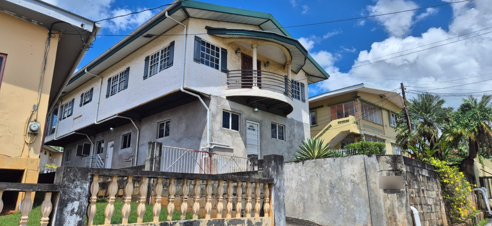

A two-storey residence with multiple apartments and a detached studio on a 4,950 sq ft freehold lot in St. Joseph, Trinidad.
This two-storey freehold residence in St. Joseph, Trinidad, is arranged as a multi-unit property: three apartments on the ground floor, a residence on the upper floor, and a detached studio annex at the rear. The building is in good condition, with an unpainted exterior finish, on a 4,950 sq ft lot.
St. Joseph is an established residential area in north-central Trinidad, in the Tacarigua ward. The configuration suits an investor looking for a rental-income property, or an owner-occupier who would like to live upstairs and let the other units.
Details are approximate and may change before the listing is released; prospective buyers should verify all information independently prior to purchase.
St. Joseph is a residential community in the Tacarigua ward of north-central Trinidad, within easy reach of the East-West corridor and the towns of Tunapuna and Curepe.
Map is approximate and shows the general St. Joseph area only.
Reach out by email and our team will follow up with more details, photos, or to schedule a viewing.